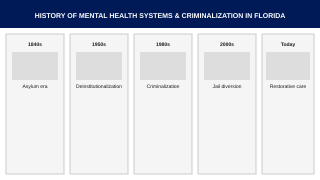

Population Served
Patients Not Prisoners aims to target mentally ill incarcerated people and their support systems in Putnam and St. Johns County, Florida. Counties are highlighted red.
This target population can further be defined as marginalized people experiencing mental illnesses and their families who have been impacted by Putnam and St. Johns County's criminal justice system and the people involved in the systems.
Historical Timeline
The historical timeline is a visual method of highlighting important historical dates, terms, figures, and events chronologically. It may be used to understand how injustice has contributed to the current problem. This timeline was co-created with the Patients Not Prisoners CARE Team. Click to view the full-size version of the timeline.
